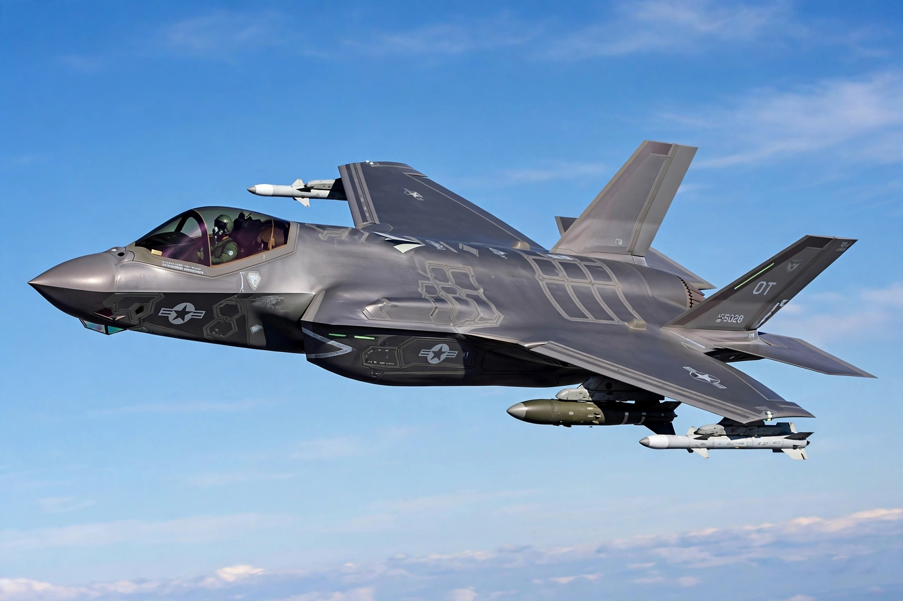

A multirole combat aircraft (MRCA) is a jet-powered combat aircraft intended to perform multiple roles in combat, typically both air-to-air and air-to-surface missions, sometimes on the same sortie ("swing role"). Examples include the F-16 Fighting Falcon, F/A-18 Hornet, Dassault Rafale, Eurofighter Typhoon, and Saab Gripen.

| Multirole combat aircraft | |
|---|---|
| Roles | Air superiority, strike, reconnaissance, SEAD |
| Examples | F-16, F/A-18, Rafale, Typhoon, Gripen, Su-30, J-10 |
The term gained currency with the 1970s European Multi-Role Combat Aircraft program that produced the Panavia Tornado. Advances in avionics, precision-guided munitions, and fly-by-wire made single aircraft able to perform missions once requiring specialized interceptors, fighter-bombers, and reconnaissance types, reducing fleet costs and complexity.
Multirole aircraft combine a capable radar (often AESA), beyond-visual-range missiles, precision strike weapons, electronic warfare systems, and data links, trading some specialization for flexibility.